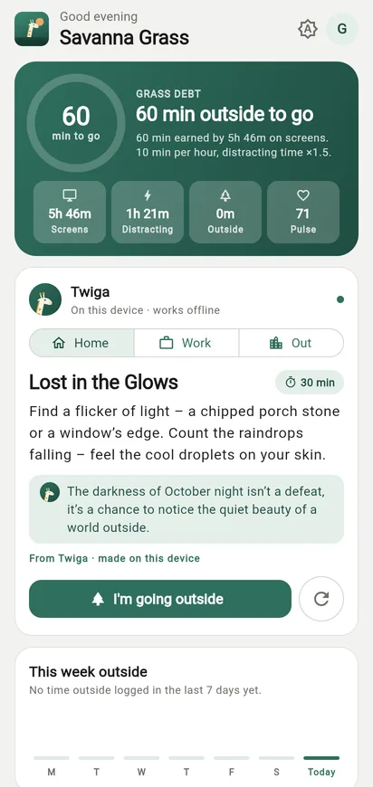
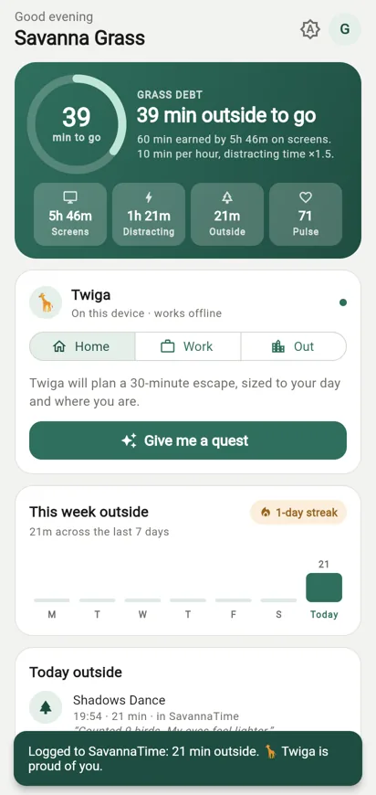
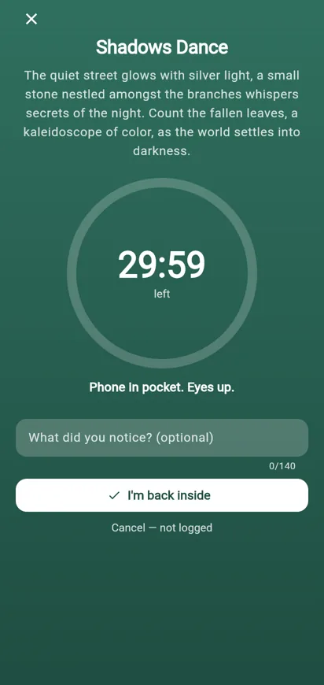
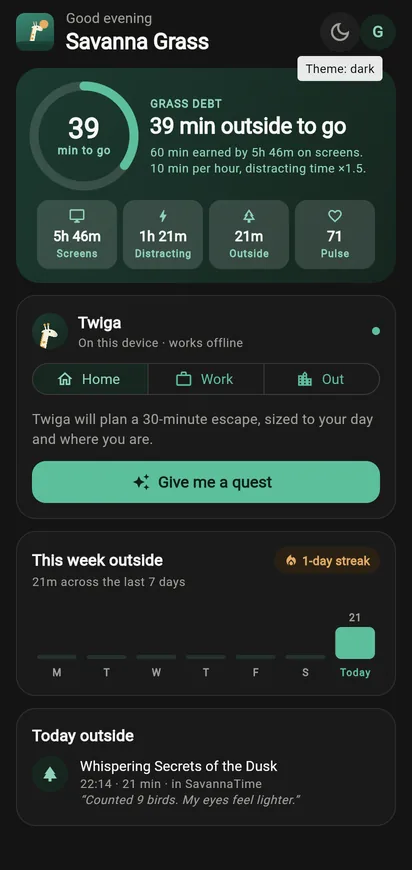

Screen time becomes grass debt
Every hour on screens owes 10 minutes outside. Distracting time counts 1.5×. Capped at an hour a day. A plain formula you can check by hand.
A companion to SavannaTime
Savanna Grass reads your day from SavannaTime and turns it into grass debt. Then Twiga 🦒, an AI guide that lives on your phone, plans a small outdoor quest to pay it back. Your screen time never leaves the device for the AI.
Free · 57 MB · Android 7.0+ (64-bit) · signed APK from GitHub Releases

Every hour on screens owes 10 minutes outside. Distracting time counts 1.5×. Capped at an hour a day. A plain formula you can check by hand.
Not "go for a walk". Something specific and sensory, built from the shape of your day, the time, whether it's dark, and where you are.
A calm timer, phone in pocket. When you're back, the break is logged to SavannaTime, the debt goes down and your week fills in.



SavannaTime has one rule it won't bend: no activity data ever reaches an external AI vendor. Which apps you use, how long, at 2 a.m. That's intimate. So Twiga is an open-weight model that runs on the device, offline.
| Cloud AI | Twiga | |
|---|---|---|
| Your app usage leaves the phone | yes | no |
| Works offline | no | yes |
| API key or per-request cost | yes | no |
| Inspect or swap the model | no | yes |
Release APKs are signed with this certificate (SHA-256):
E4:D7:5A:20:19:CC:32:2D:BC:9E:78:62:A2:BF:C5:29:2F:72:00:68:1C:D6:E3:29:42:71:F2:ED:01:D0:43:4B
Check it with apksigner verify --print-certs savanna-grass.apk. Each release also lists the APK's SHA-256 checksum.
iPhone: not yet. The app is built with Flutter, so an iOS build is on the roadmap.
Yes. Savanna Grass reads your screen time from your SavannaTime account and logs your breaks back to it as time entries, so they show up on your SavannaTime dashboard.
Today's totals, how much was distracting, your top three app names, the time of day, and whether you chose Home, Work or Out. No window titles, no URLs. It all stays on your phone.
Twiga is Gemma 3 1B, an open-weight model from Google, running locally through LiteRT/MediaPipe. The app downloads an unmodified copy, mirrored on this project's GitHub Releases.
You get classic hand-written quests. The debt, the timer and the logging all work without the model.
Quests and the timer do. Finished breaks are saved on your phone and sync to SavannaTime when you're back online, exactly once.